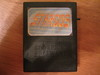
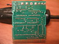
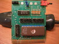

 |
 |
 |
| stardos.prg | dump of the StarDOS cartridge ROM taken using Markus Brenner's mdump utility. Note that in addition to disabling the EXROM and GAME lines on the expansion port (pins 8 and 9), I also had to disable the two 5v pins (2,3) to be able to disable auto-start for this cartridge. |
| stardos4.prg | dump of $8000-$a000 taken using smon with StarDOS resident, after executing the StarDOS kernal code at $F2D1 |
| 1-1571 dos v3.0.prg | Part 1 |
| 2-1571 dos v3.0.prg | Part 2 |
| 3-1571 dos v3.0.prg | Part 3 |
| 4-1571 dos v3.0.prg | Part 4 |